Префектура Айти · Нагоя, Аримацу · прогулка
Аримацу: город красильщиков на старом Токайдо в двадцати минутах от Нагои
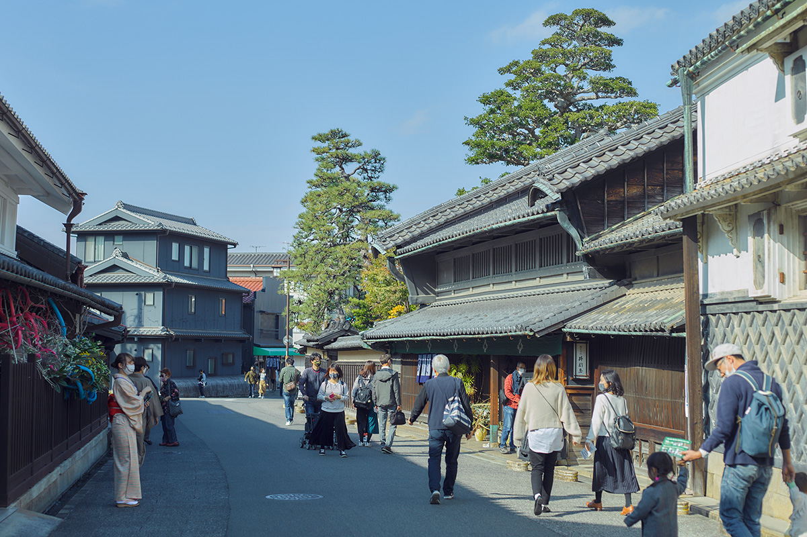
От вокзала Нагоя до Аримацу двадцать минут на электричке, а по ощущениям лет четыреста. Город вырос на тракте Токайдо вместе с узорчатой тканью сибори и до сих пор живёт ею.
История
Город, который построили переселенцы
Аримацу входит в район Мидори на юго-востоке Нагои. От главного вокзала сюда идёт линия Мэйтэцу Нагоя-хонсэн, дорога занимает около 20 минут. В 2019 году город получил статус японского наследия как «место, где делают сибори и где жива атмосфера эпохи Эдо». Это единственный в Японии квартал, охраняемый государством именно как город красильщиков.
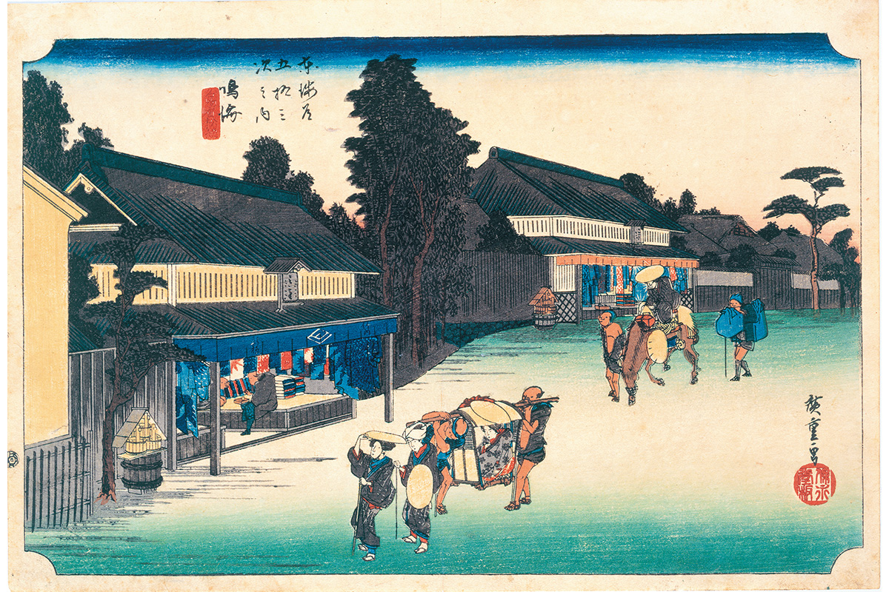
Аримацу появился в 1608 году по указу княжества Овари. Тракт Токайдо, соединявший Эдо и Киото, становился всё важнее, а места вокруг были пустынными: сплошные сосновые леса. Чтобы заселить их, власти освободили переселенцев от повинностей. Первыми приехали восемь человек, и среди них Сёкуро Такэда.
Земли для пашни было мало, на одних чайных домиках у дороги не проживёшь. Перелом случился в 1610 году. Сёкуро работал на строительстве замка Нагоя и заметил на мастерах из Бунго, с острова Кюсю, кимоно с необычным узором. Из этой подсказки он и вывел свою технику крашения. Около 1638 года, когда в моду вошло паломничество в Исэ, движение по Токайдо стало оживлённым. Путники покупали в Аримацу отрезы ткани и полотенца тэнугуи на память, и сибори прославилось на всю страну.
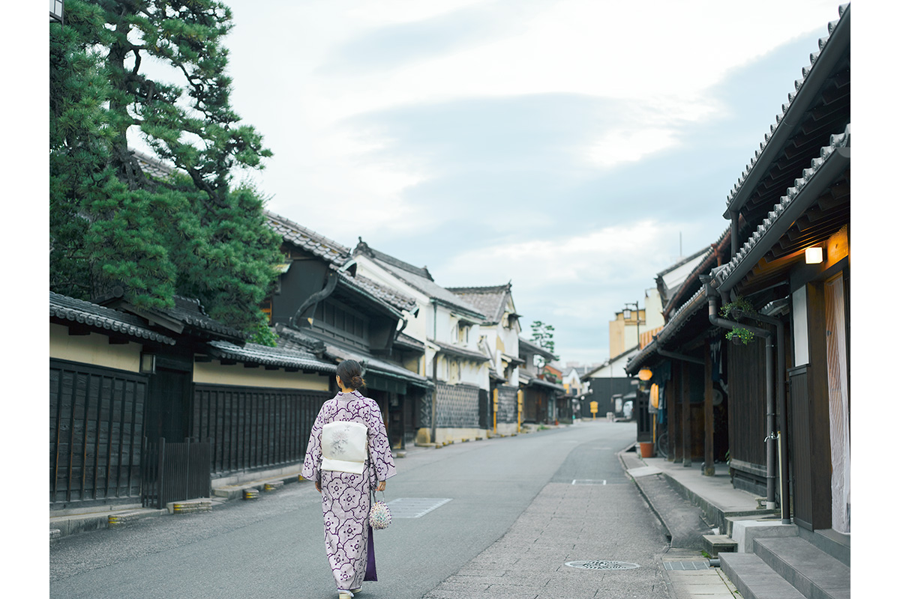
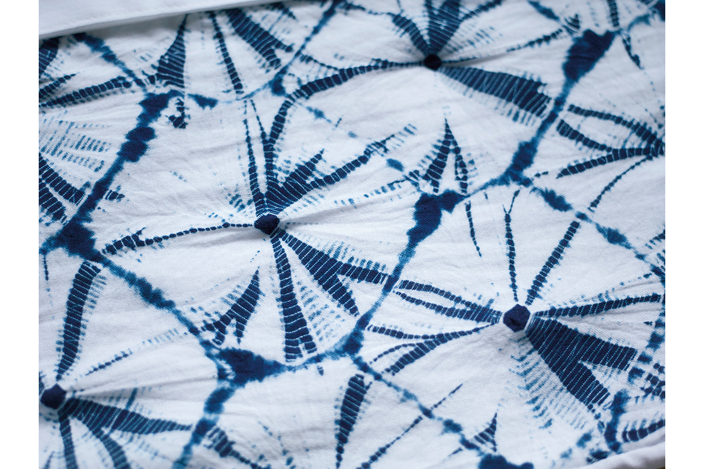
Сибори это крашение с перевязкой: ткань стягивают нитью и опускают в краситель, перевязанные места не прокрашиваются, и появляется узор. В Японии этот способ известен с древности: о нём пишет хроника «Нихон сёки», а образцы хранятся в сокровищнице Сёсоин. В мире насчитывают около 100 техник сибори, и 90% из них развились в Японии. Мастера Аримацу, начиная с Сёкуро, всё время придумывали новые. В 1975 году сибори Аримацу-Наруми первым в префектуре Айти получило статус традиционного ремесла, а слово «сибори» вошло в другие языки.
Улица
Старый Токайдо: как город сохранил себя
Особенность Аримацу в том, что город с самого начала жил одним сибори и состоял только из домов торговцев и красильщиков. Поэтому здесь уцелели городские дома эпохи Эдо. При этом почти все дома и амбары вдоль тракта построены с конца эпохи Эдо до эпохи Мэйдзи: в 1784 году город выгорел дотла и был отстроен заново на деньги княжества. Расцвет пришёлся на годы от Мэйдзи до Сёва.
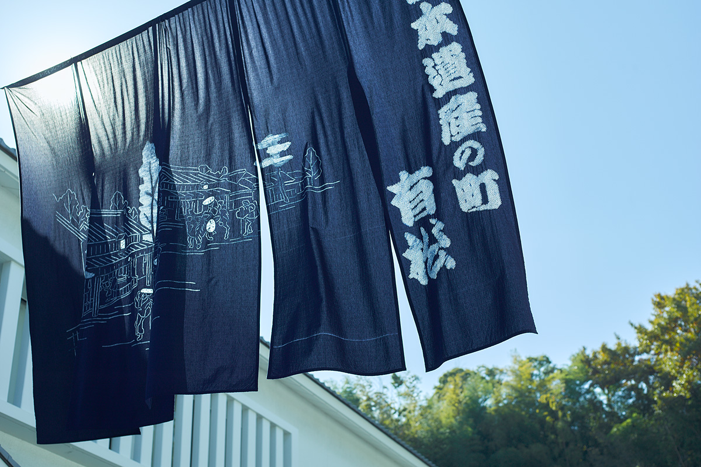
У домов широкий фасад, чтобы торговать с путниками прямо с улицы. Стены оштукатурены целиком, по технике «нурикомэ», амбары облицованы плиткой «намако» с белыми швами. Под одной крышей здесь работали мастера и шла торговля: такой дом, где и мастерская, и лавка, в Японии встречается редко.
Аримацу считают родиной японского движения за сохранение старых улиц. Первый всеяпонский семинар о сохранении городской застройки прошёл в 1978 году здесь и в другом старинном городке префектуры Айти. В 1984 году Аримацу стал первой охраняемой зоной Нагои, в 2013 году провода на этом участке Токайдо убрали под землю, а в 2016 году квартал первым среди улиц на старых трактах в четырёх крупнейших городах Японии вошёл в список важных охраняемых групп традиционных построек. Город живой: люди здесь живут и работают, и поэтому, наверное, гулять по нему так спокойно. Около 200 000 туристов в год приезжают сюда ради сибори и старых домов.
Традиция
«Такэда Кахэй сётэн»: дом родни Сёкуро
Лавка «Такэда Кахэй сётэн» ведёт историю от родственника Сёкуро, который занимался сибори в 1741–1744 годах. Дом построили в конце эпохи Эдо как ветвь семьи Такэда, его не раз перестраивали, но облик старой торговой усадьбы остался. Говорят, именно его фасад изобразил Хиросигэ. Дом охраняется как культурное наследие Нагои и важное для облика города здание.
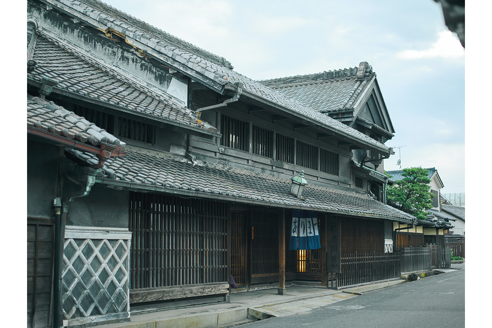
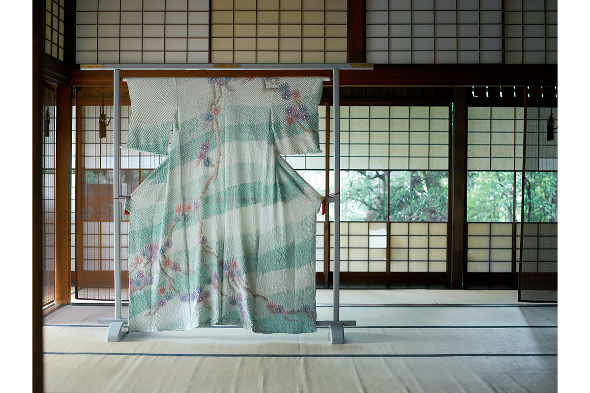
В чайном домике усадьбы бывали важные люди конца эпохи Эдо: Иэмоти Токугава (1846–1866), четырнадцатый сёгун, и Кайсю Кацу (1823–1899), государственный деятель, который в 1868 году договорился о мирной сдаче Эдо. Покупки здесь делаешь с чувством путника эпохи Эдо, идущего по Токайдо. Лавка регулярно устраивает распродажи новых работ и другие события, под них тоже можно подгадать поездку.
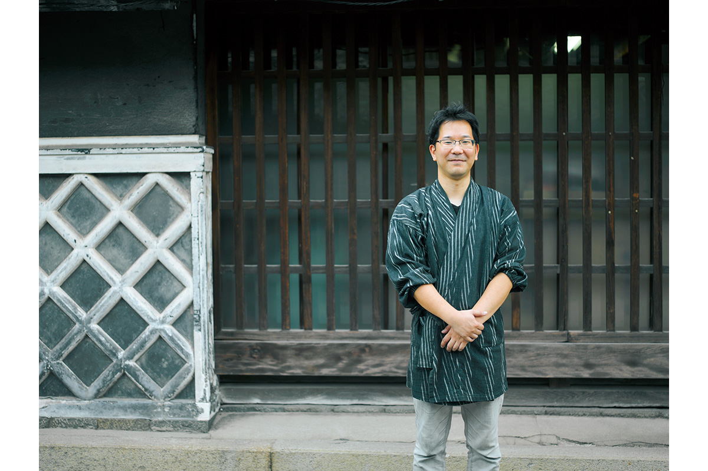
«Такэда Кахэй сётэн»
- Адрес
- префектура Айти, Нагоя, район Мидори, Аримацу, 1802
- Телефон
- +81 52-623-2511
- Часы работы
- 9:00–17:00
- Выходные
- нерегулярно
Новое
suzusan: сибори, вернувшееся из Европы
Бренд suzusan придумал пятый наследник красильной фирмы «Судзусан», которая работает в Аримацу. Он уехал в Европу учиться на художника и там вместе с соседом по квартире основал свою марку. Сибори для него не ткань для летних кимоно юката, а ремесло, которое может жить в европейском доме.
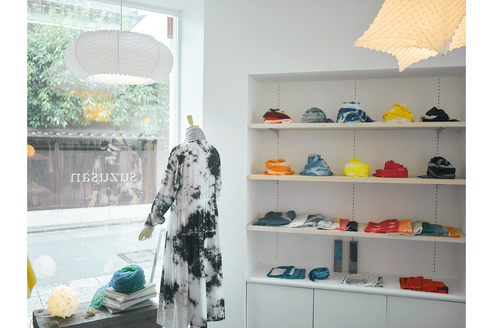
Сибори изначально это техника отделки уже сотканной ткани. Поэтому вместо хлопка и шёлка suzusan берёт кашемир, альпаку и другие дорогие материалы и красит их по-старому. С 2012 года бренд показывает коллекции в Париже, с 2014 года в Милане, шьёт вместе с японскими марками и поставляет ткань мировым модным домам. В 2020 году его вещи продавались в 23 странах, в 120 с лишним магазинах. Подробнее о ремесле и о suzusan в статье «Аримацу-Наруми сибори».
suzusan Arimatsu shop
- Адрес
- префектура Айти, Нагоя, район Мидори, Аримацу, 1905
- Телефон
- +81 52-825-5636
- Часы работы
- пн, вт, чт, пт 11:00–18:00; сб, вс 10:00–17:00
- Выходные
- среда
- Сайт
- suzusan.com
Музей
Музей сибори и гиды «анайбито»
Если на прогулке хочется понять сибори глубже, стоит зайти в музей «Аримацу-Наруми сибори кайкан». Его открыли в 1984 году, чтобы рассказывать о ремесле и передавать его дальше. В зале образцов есть техники, которые уже утрачены, есть фильм с английским переводом.
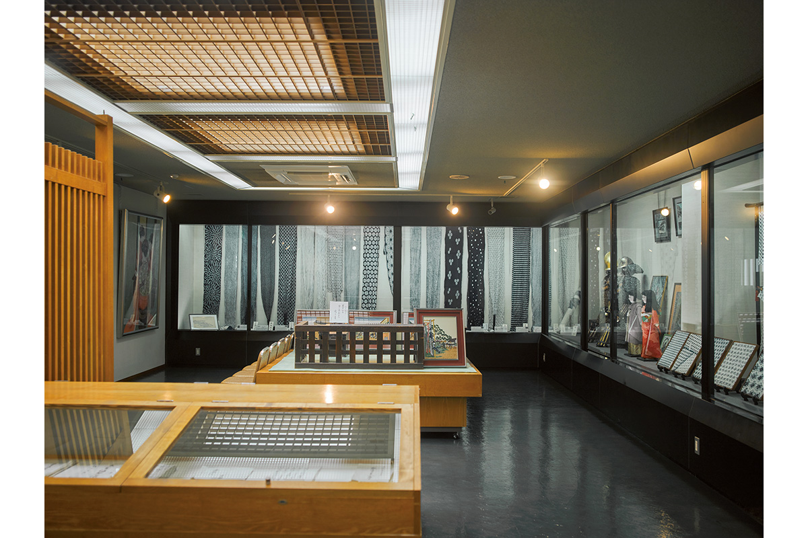
На втором этаже два мастера показывают «кукури», перевязку ткани нитью, и с ними можно поговорить. Там же проходят занятия для гостей: в 2020 году платок стоил от 1100 иен, занятие длится около часа, записываться нужно заранее. Свою работу после крашения присылают по почте примерно через три недели.
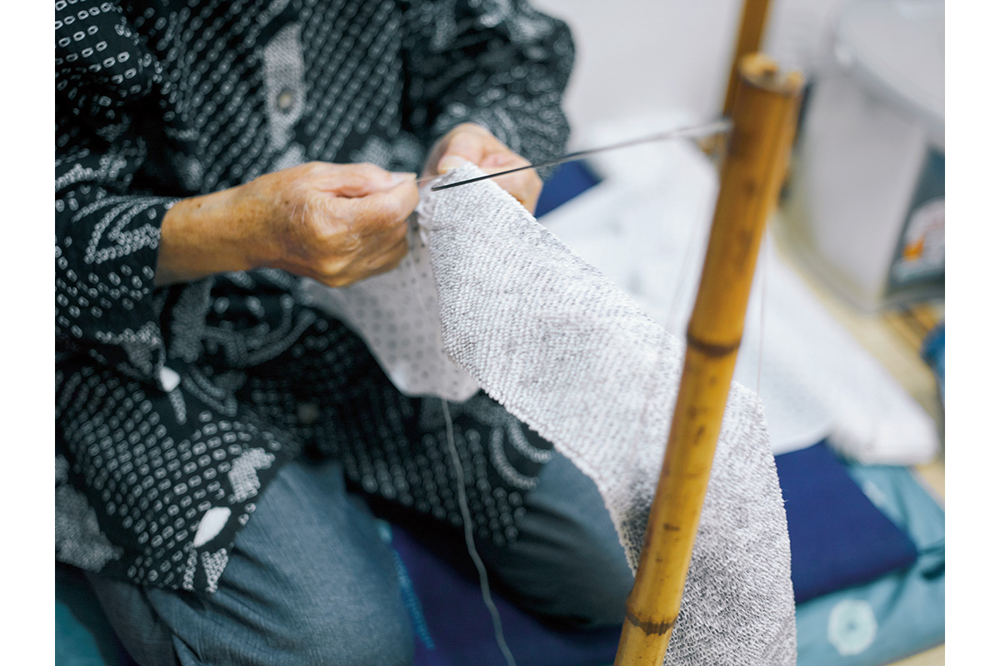
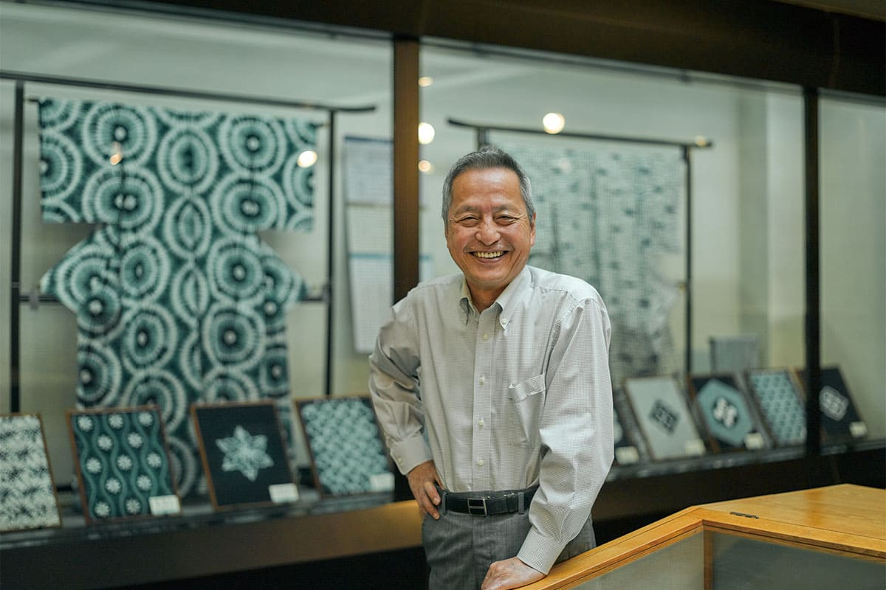
По Аримацу водит общество гидов-волонтёров «Аримацу анайбито-но кай», это люди от 30 до 80 с лишним лет. Маршрут подбирают под интересы гостей. Заявку подают через музей не позже чем за две недели: имя, адрес и телефон руководителя группы, желаемые дата, время и число людей. В 2020 году гид стоил 1000 иен.
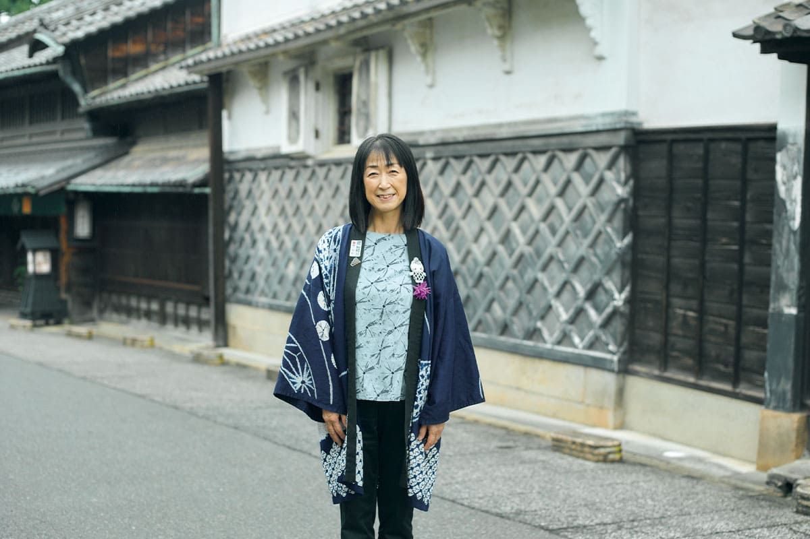
Музей «Аримацу-Наруми сибори кайкан»
- Адрес
- префектура Айти, Нагоя, район Мидори, Аримацу, 3008
- Телефон
- +81 52-621-0111
- Часы работы
- 9:30–17:00 (показ мастеров до 16:30)
- Выходные
- нерегулярно
- Цены / Вход
- занятие по сибори, платок от 1100 иен, по записи; гид «анайбито» 1000 иен
Еда
Пекарня «Дашенька-кура» в амбаре торговца
«Дашенька» это пекарня из городка Кота в префектуре Айти, а в Аримацу её второй магазин открылся в 2000 году. Когда город боролся за сохранение старых домов, один энтузиаст из Осаки перестроил амбар бывшего оптовика сибори и начал печь в нём хлеб.
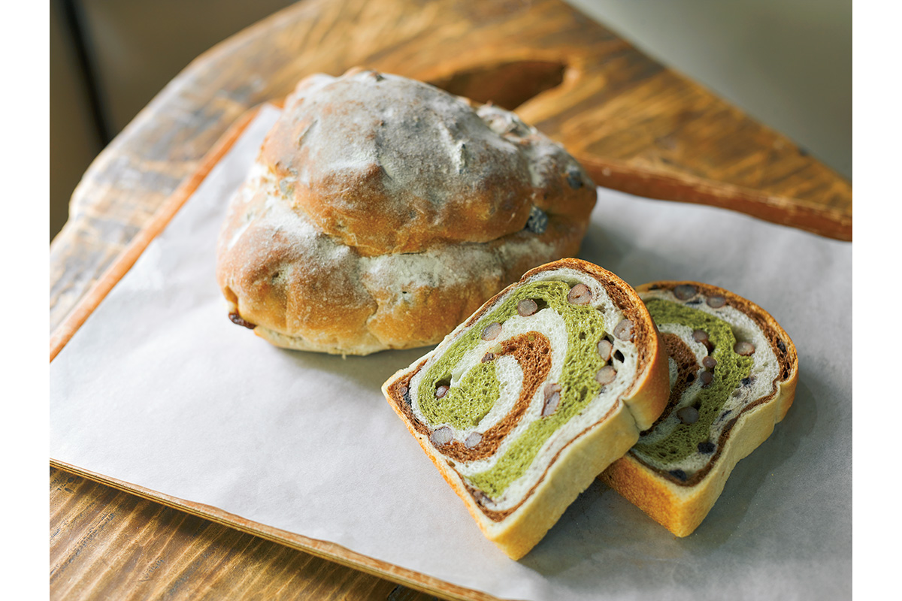
Муку берут японскую, выращенную с минимумом пестицидов или органическую, закваску делают на фруктах, хлеб пекут в каменной печи. Орехи и сухофрукты органические, в кремы и сладкую фасолевую пасту ничего не добавляют. Хлеб можно взять с собой, а можно съесть на месте: во внутреннем дворике или за столами на втором этаже.
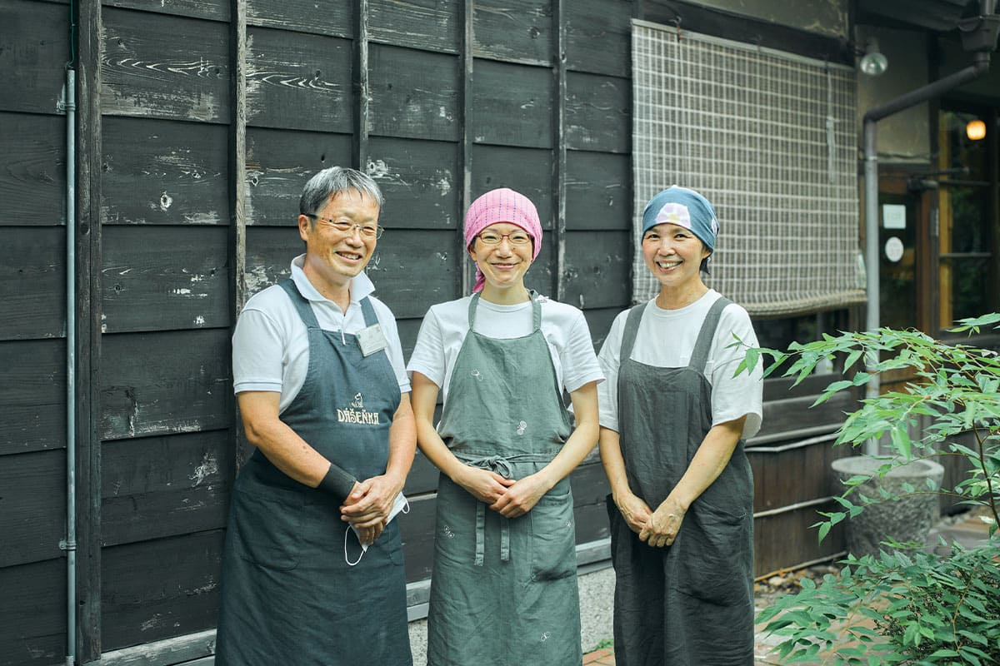
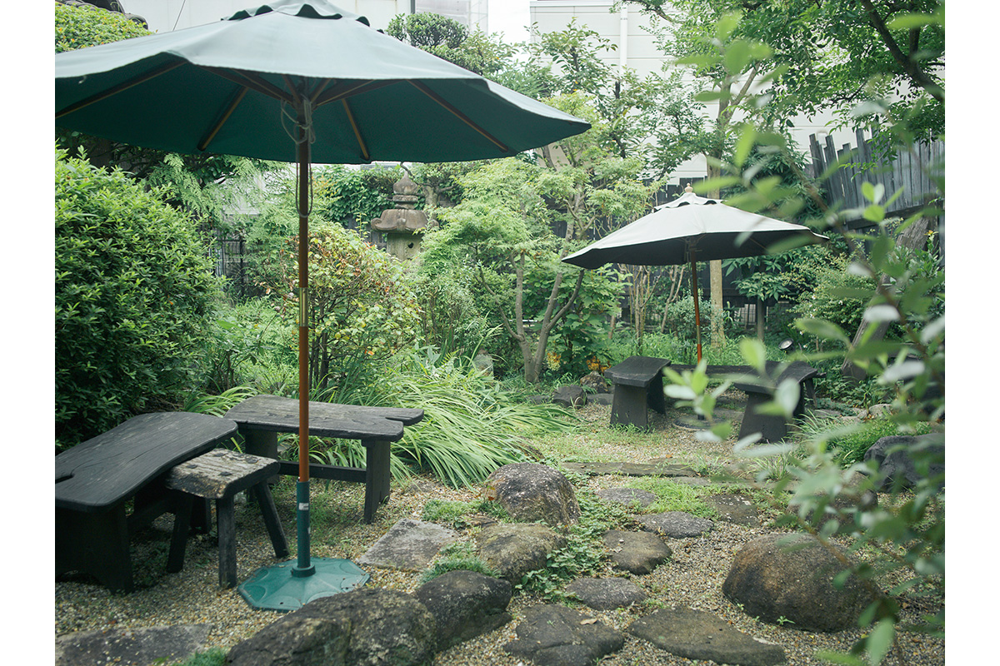
«Дашенька-кура»
- Адрес
- префектура Айти, Нагоя, район Мидори, Аримацу, 2304
- Телефон
- +81 52-624-0050
- Часы работы
- 10:00–17:00
- Выходные
- понедельник, вторник
Еда
Кафе «Сёкуро» в доме основателя
Главный дом семьи Сёкуро Такэды долго стоял пустым. В 2017 году на деньги, собранные краудфандингом, в нём открыли кафе-бар с библиотекой. Дому около 170 лет, и в нём хорошо просто посидеть. Хозяйка кафе, старшая дочь седьмого главы семьи Такэда Кахэй, прекрасно знает историю города и ремесла, и её интересно расспрашивать. Здесь бывают концерты и чайные семинары, кафе стало местом встреч для жителей.
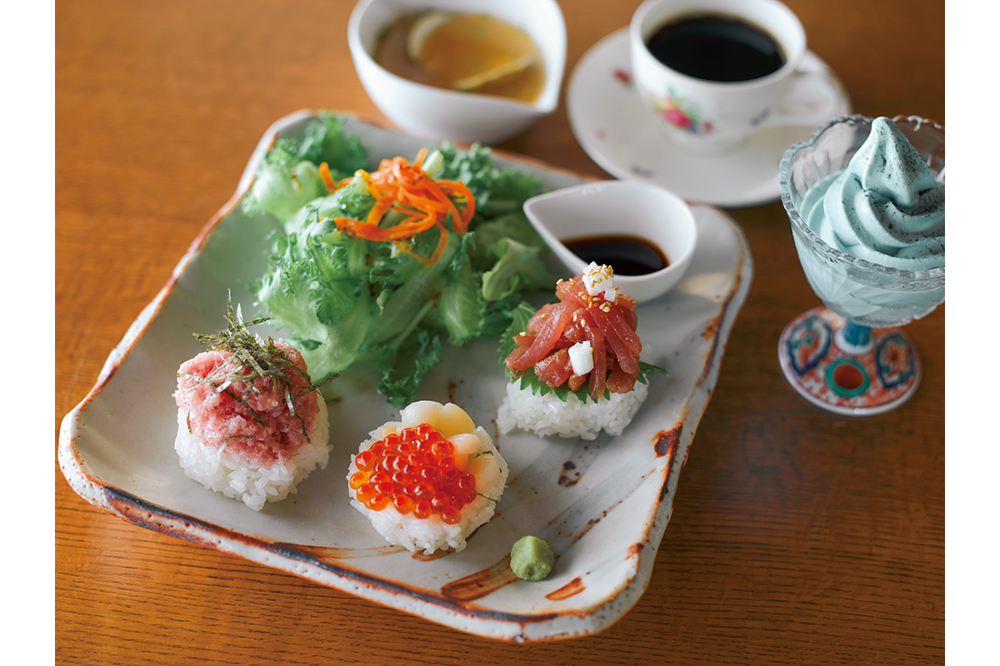
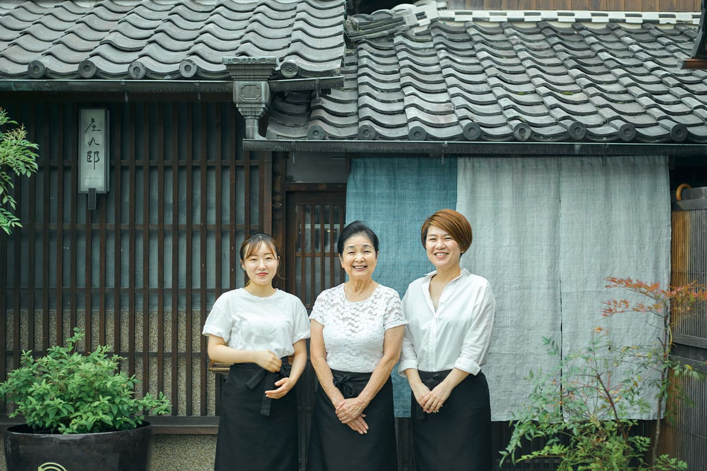
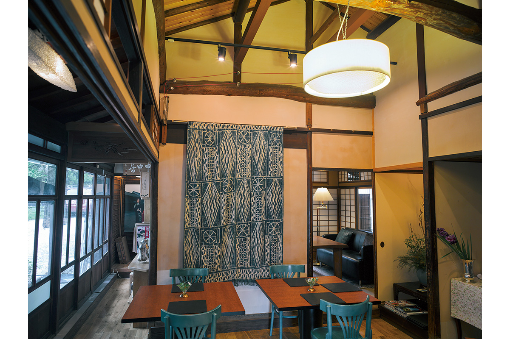
«Сёкуро», кафе и бар с библиотекой
- Адрес
- префектура Айти, Нагоя, район Мидори, Аримацу, 1804
- Телефон
- +81 52-627-2055
- Часы работы
- обед 11:00–14:00 (последний заказ 13:30), кафе 14:00–16:00, ужин 17:00–21:00 (последний заказ 20:30)
- Выходные
- понедельник
Ночлег
Guesthouse MADO: окно на старый Токайдо
В охраняемом квартале Аримацу можно остановиться на ночь. Гостевой дом открыла в 2015 году супружеская пара, которая занималась одеждой в Китае и вернулась на родину мужа. Название значит «окно»: огромное решётчатое окно выходит прямо на Токайдо.
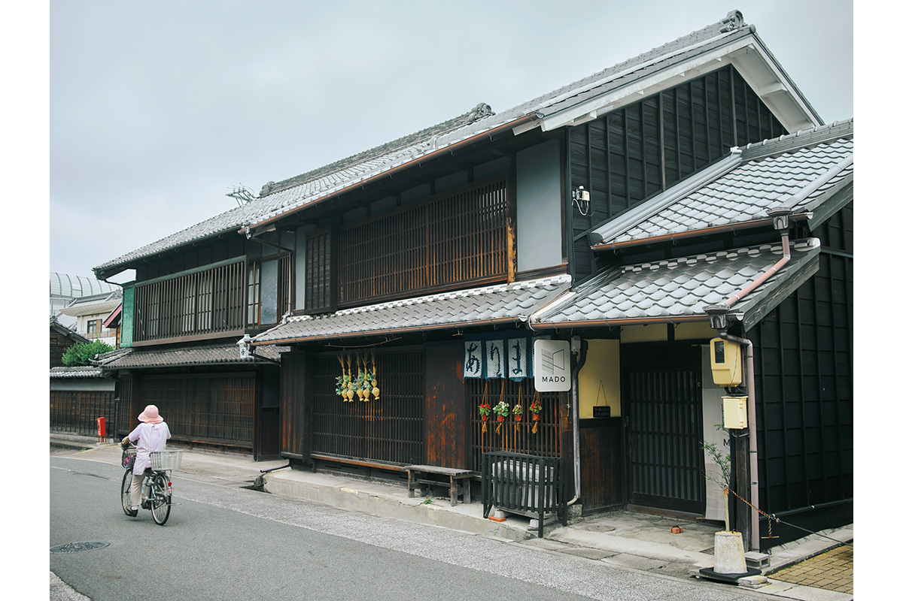
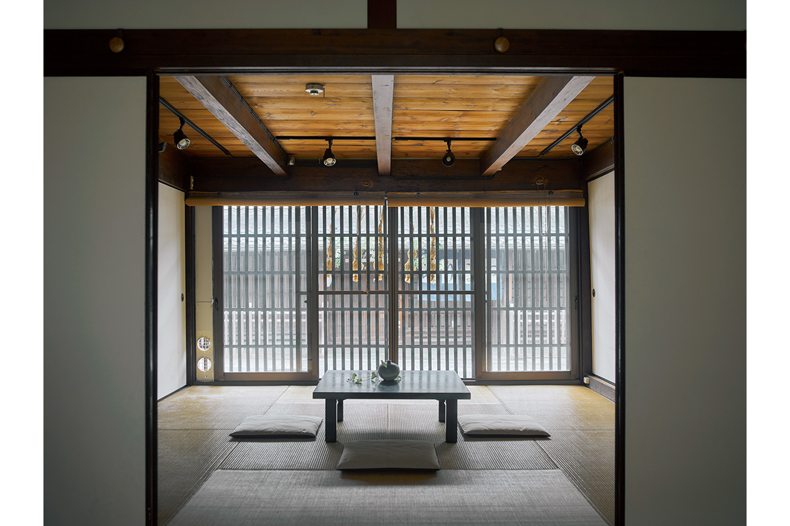
Хозяева охотно делятся местными находками. Например, советуют зал текстильных машин в Мемориальном музее промышленности и технологий Toyota: «там можно провести целый день». Гости, по словам хозяев, в один голос говорят, что в Аримацу есть настоящая жизнь. В 2020 году по выходным дом работал и как кафе, здесь проходили мастер-классы. В 2026 году дом сдаётся только целиком, под названием «Сибори-но ядо MADO».
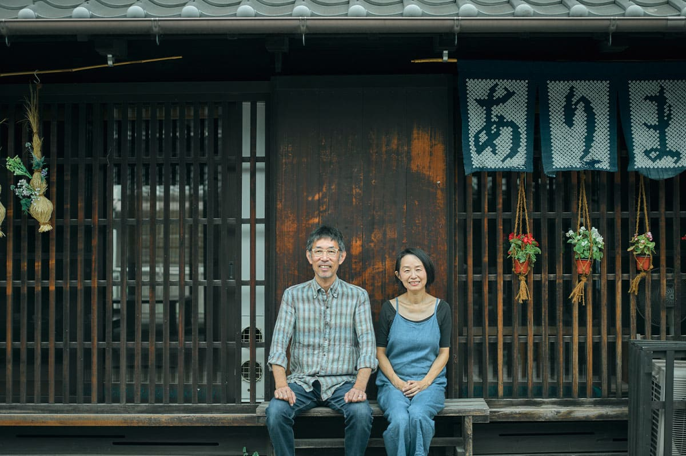
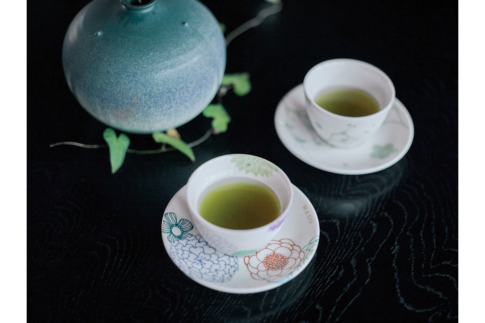
Guesthouse MADO
- Адрес
- префектура Айти, Нагоя, район Мидори, Аримацу, 924
- Телефон
- +81 52-746-5946
- Номера
- от 5000 иен за комнату при одном госте (группы от трёх человек по договорённости, можно снять весь дом; в холодный и жаркий сезон 500 иен за кондиционер на комнату)
- Заезд / выезд
- 16:00–21:00 / 10:00
Праздник
Аримацу сибори мацури: улица в синих тканях
Больше всего людей в Аримацу бывает в начале июня, на празднике «Аримацу сибори мацури». Сюда приезжают около 100 000 человек со всей страны, от Канто до Кюсю. Праздник проводят с 1985 года, чтобы больше людей узнали о сибори. Площадкой служит сам старый Токайдо: у домов под двускатными крышами показывают новые работы и продают ткани по особым ценам, и многие едут сюда за находками. В 2020 году праздник отменили из-за коронавируса.
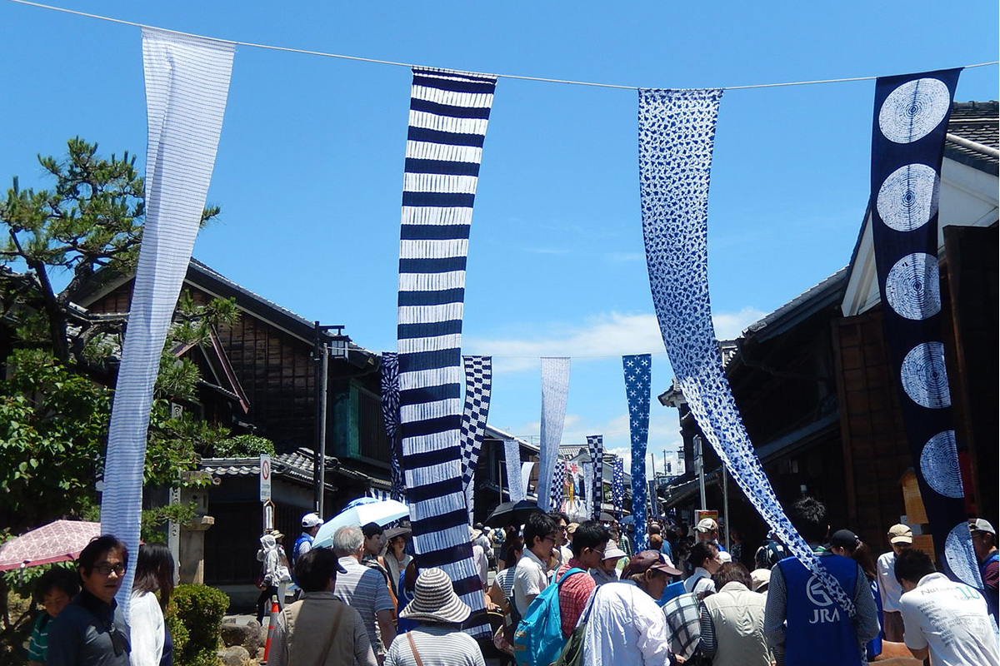
Главное зрелище праздника это работа старых мастеров. Те, кто обычно показывает перевязку в музее, собираются вместе, болтают с гостями на мягком нагойском говоре и почти не смотрят на руки, а нить ложится на ткань тончайшими витками.
Больше всего любят мастер-классы. Из сотни техник новичкам дают самые простые: «сэкка», где проступает узор как снежинка, и «тэгумо» с узором паутины. Для опытных есть занятия посложнее с традиционными мастерами, и ради них приезжают даже из-за границы. В начале 1970-х годов в Аримацу пробовали делать сибори машинами, но восемь этапов работы повторить не удалось, и ткань по-прежнему делают руками.
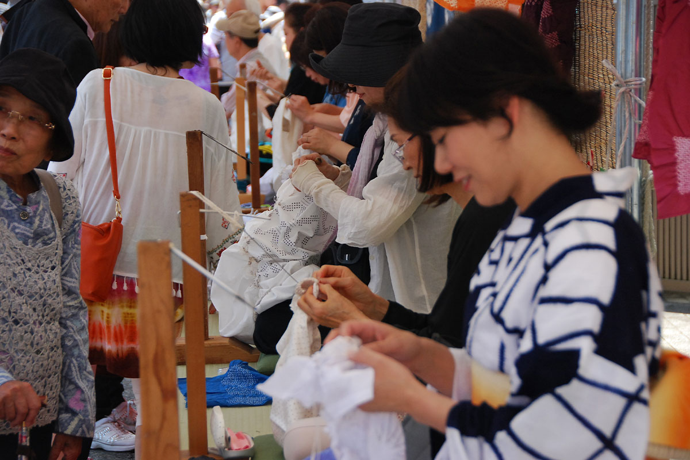
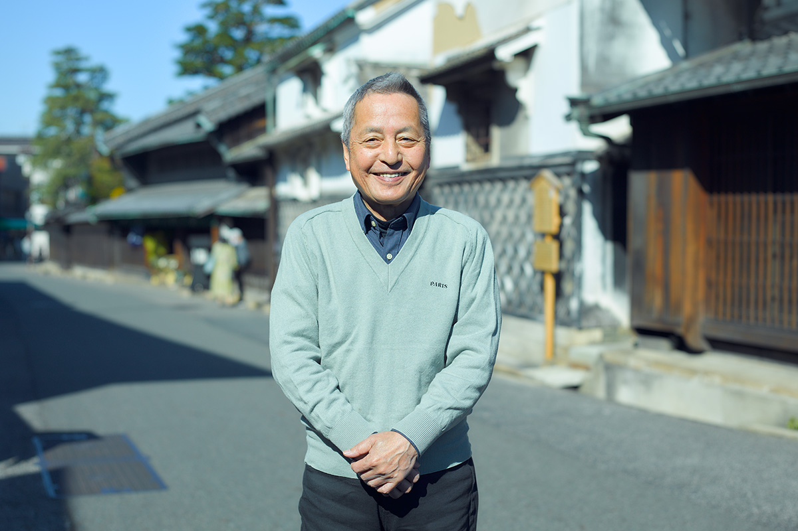
«Даже у двух вещей одного рисунка разное лицо: каждый мастер по-своему наматывает нить и выбирает время для краски. Единственный в мире узор и есть прелесть сибори»
глава кооператива мастеров сибори Аримацу
По его словам, город не раз переживал подъёмы и спады: пожары, переход с кимоно на европейскую одежду, упадок текстильной промышленности. И каждый раз выживал, потому что охотно брал новое. На праздник стали звать фургоны с едой и устраивать рынок, чтобы приходила молодёжь, а в Аримацу всё больше молодых людей открывают своё дело, увлёкшись сибори.
Праздник
Поздняя осень в Аримацу: икебана и чайная церемония
Во вторые субботу и воскресенье ноября в Аримацу проходит праздник «Поздняя осень в Аримацу»: икебана, музыка и чайная церемония в старых купеческих домах вдоль Токайдо. Его проводят с 2013 года, и у него своя причина.
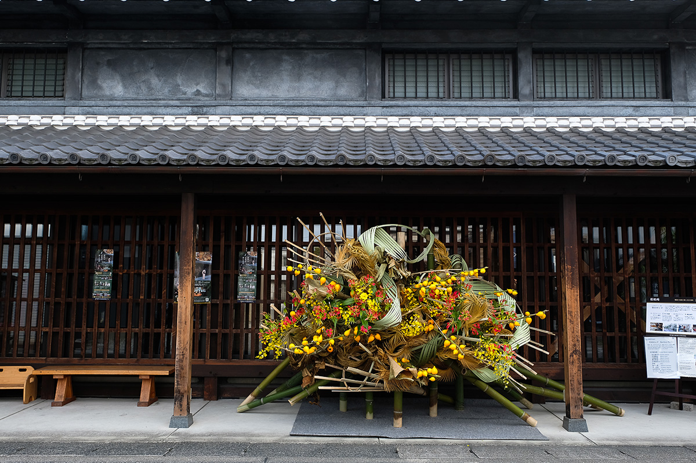
Хлопок для Аримацу растили на соседнем полуострове Тита, поэтому здесь делали много хлопковых вещей, тэнугуи и юката. Со временем за городом закрепился образ «Аримацу значит юката», хотя исконно здесь отделывали ткань для кимоно. Глава оргкомитета, один из руководителей местной красильни, объясняет: сибори можно делать и на шерсти, и на полиэстере, и праздник должен показать, что в Аримацу есть и кимоно.
Праздник вырос из двух событий, выставки икебаны и прогулки по городу. Их стали проводить вместе, потом добавили чайную церемонию и всё, что подходит к кимоно. В 2020 году, на восьмом празднике, икебана стояла у входов в дома, в домах играли кото, эрху и сямисэн школы Цугару, в чайном домике старой усадьбы мастера школы Омотэсэнкэ проводили церемонию. Студенты и волонтёры в кимоно из сибори Аримацу водили туристов.
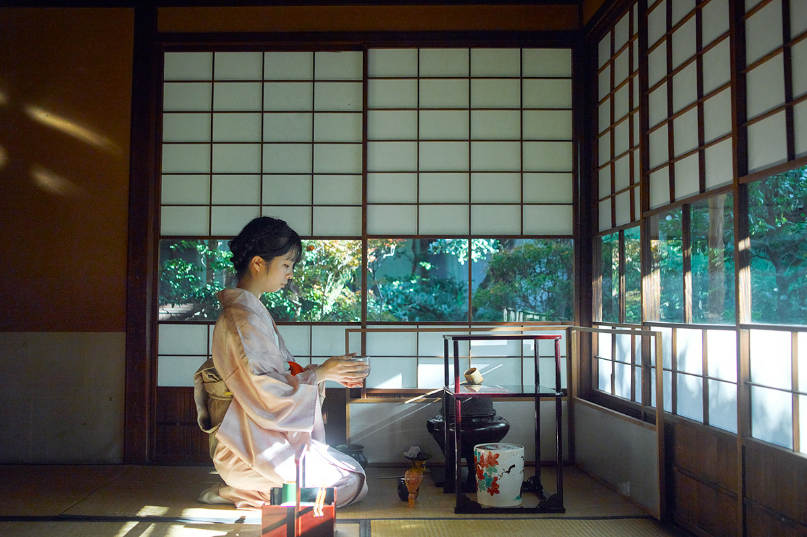
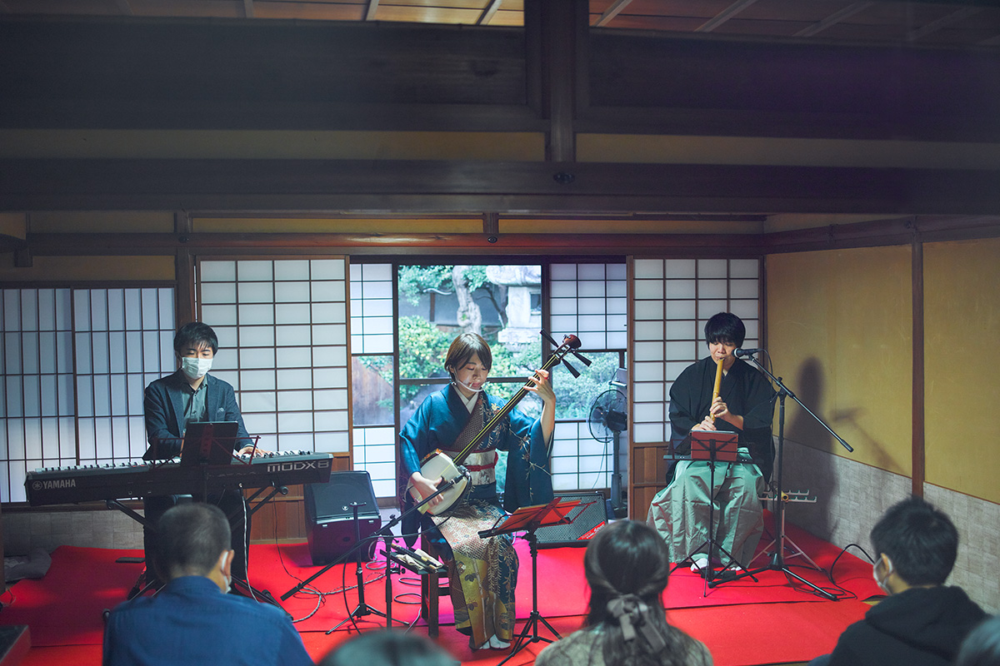
В дни праздника открывают дома, которые обычно закрыты для посетителей, и рассказывают о них гиды «анайбито». Неторопливо пройтись по домам торговцев значит увидеть Аримацу чуть глубже.
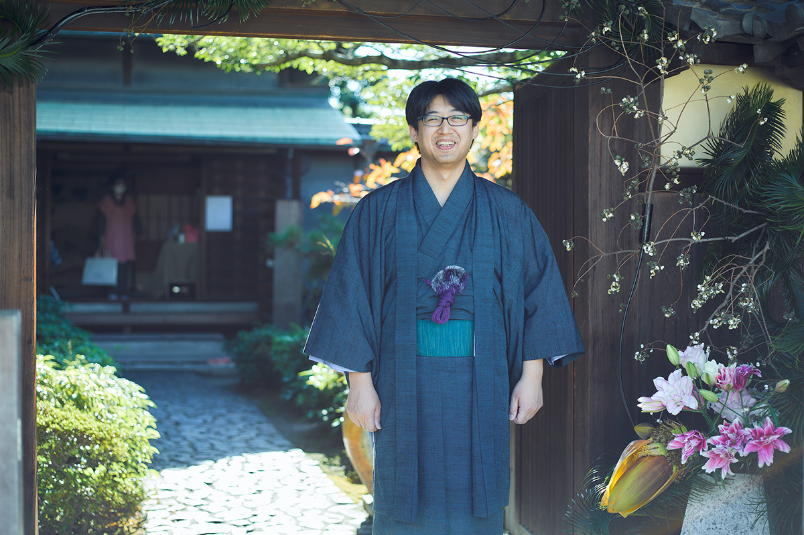
«В людях Аримацу живут два чувства: купеческое, которое всё время ищет новое, и ремесленное, которое улучшает то, что есть. Город, каким мы его видим, получился из проб и ошибок наших предшественников»
глава оргкомитета праздника
Праздник
Аримацу Митиакари: бамбуковые фонари на одну ночь
После заката оживлённый днём Токайдо затихает, двери домов закрыты, и старые фасады кажутся ещё основательнее. В такой вечер раз в году на улицу выставляют бамбуковые фонари со свечами: это «Аримацу Митиакари», «свет на дороге».
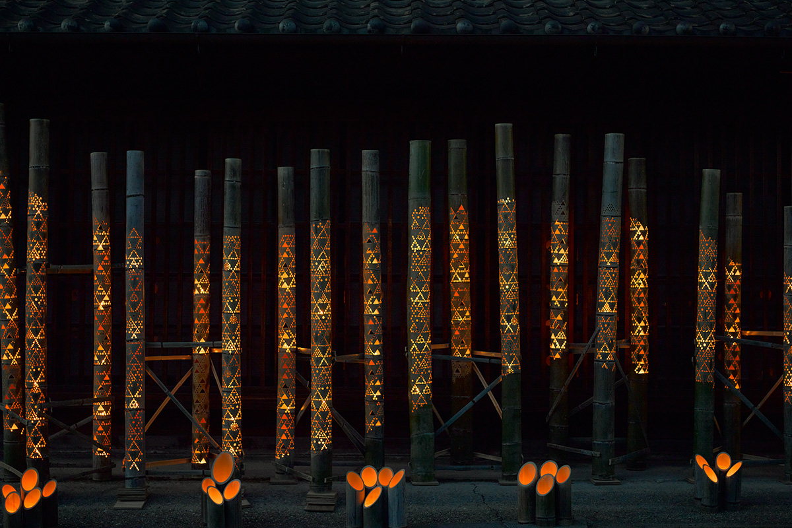
Фонари делают студенты-архитекторы и волонтёры вместе с жителями: от рубки бамбука до установки всё сами. В 2020 году, на пятый раз, праздник прошёл вечером первого дня «Поздней осени в Аримацу», и у домов зажгли около 100 фонарей. Темой выбрали «Свет надежды». У дома семьи Кодзука с поднятыми противопожарными стенками «удацу» повесили фонари с картинками четырёх сезонов: куклы праздника девочек, фейерверки, любование луной, снеговик. Напротив, у соседней лавки и гостевого дома MADO, фонари украсили узором «чешуя» из треугольников, который в Японии оберегает от бед.
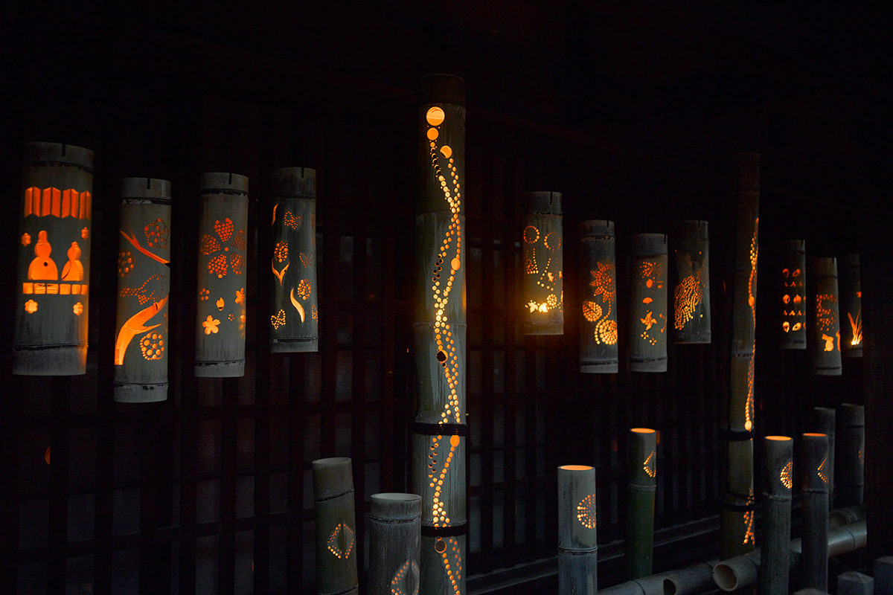
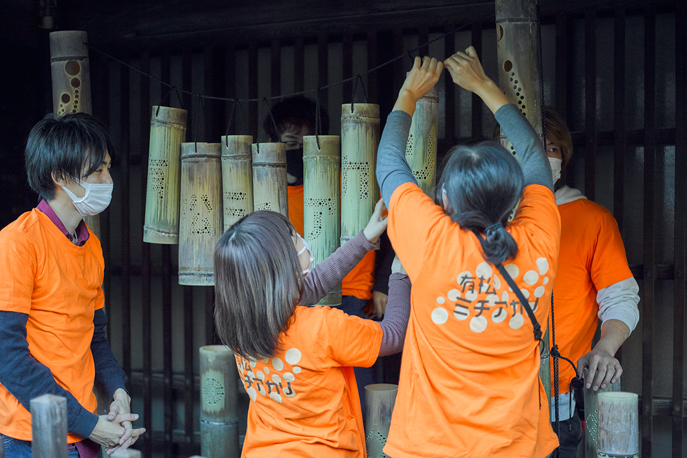
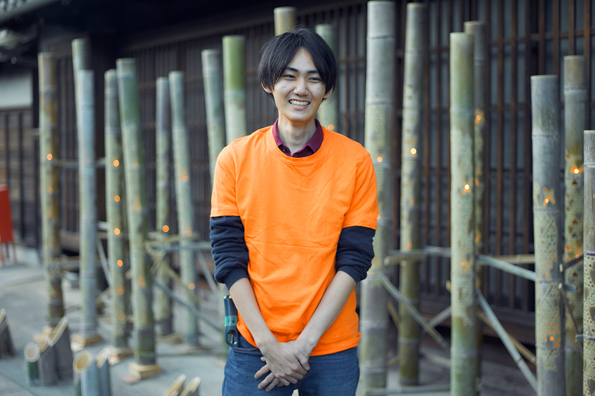
«На занятиях мы обычно доходим только до чертежей, а здесь делаешь вещь руками. Когда студентам чего-то не хватает, помогают жители»
руководитель студентов-волонтёров
Рынок
Аримацукэтто: рынок у святилища
У западного края охраняемого квартала, на углу у храма Гиондзи, стоит каменный фонарь. Если от него пойти на север, дорога приведёт к святилищу Аримацу Тэмманся, покровителю города. В дни рынка «Аримацукэтто» (игра слов: Аримацу и «маркет») в тихой роще ставят палатки с одеждой, украшениями, кофе и маффинами, и сюда приходят семьями.
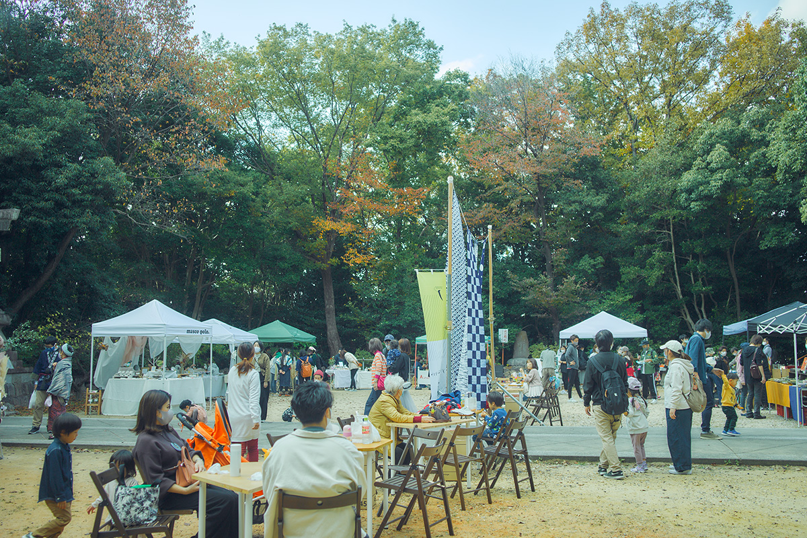
Организатор рынка, глава местной торговой фирмы, рассказывает, что у святилища нет своего священника и за ним присматривают соседи, а хотелось, чтобы здесь снова было людно, как в годы Сёва, когда двор был детской площадкой. Покупатели болтают с продавцами, дети бегают по игровой зоне, за столами в центре обедают семьи.
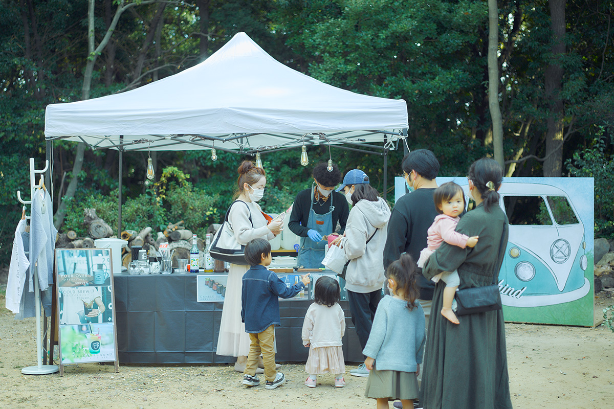
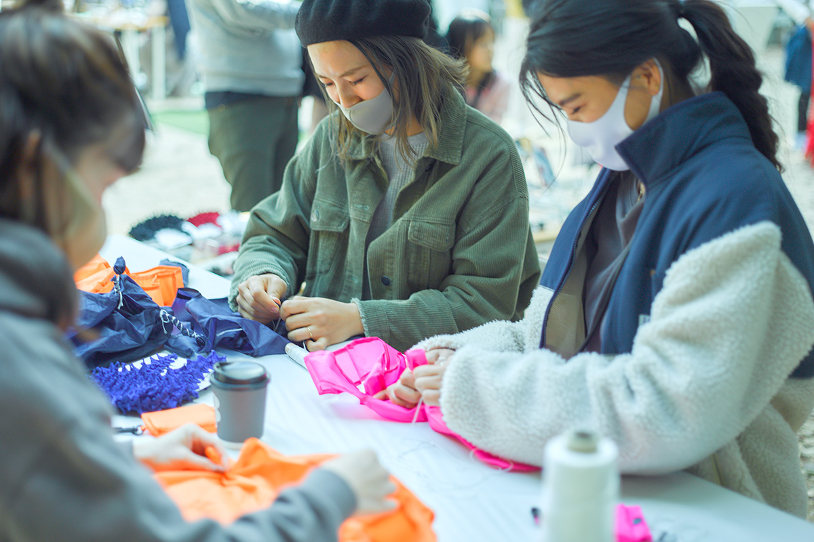
Первый рынок прошёл в 2019 году вместе с праздником сибори, второй в 2020 году вместе с «Поздней осенью в Аримацу», и тогда пришло около 2000 человек. Задача рынка в том, чтобы приехали те, кто раньше в Аримацу не бывал: молодёжь и семьи. Многие гости рынка потом шли гулять по старой улице. Девиз рынка: «встретиться, узнать, придумать». Кроме прилавков здесь много мастер-классов: работа по дереву, свечи, сибори.
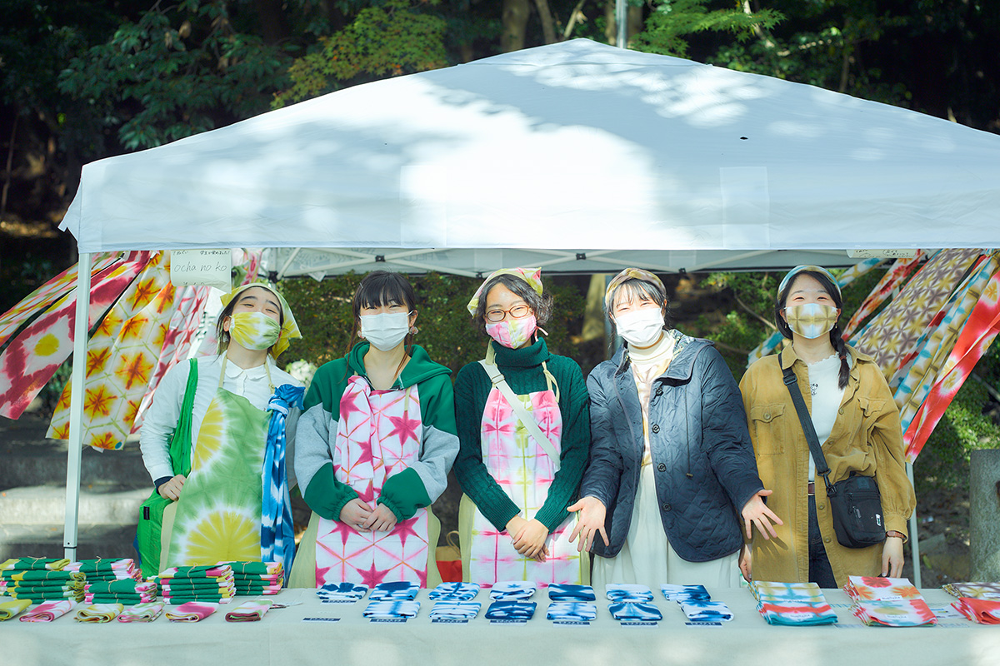
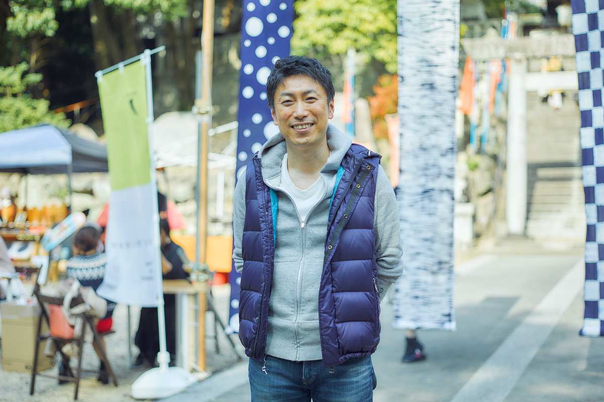
«Аримацу всегда рождал новые ремёсла через общение людей. Город менялся вместе со временем, но оставался городом, где делают вещи. Пусть здесь собираются самые разные мастера»
организатор рынка «Аримацукэтто»
У входов в дома на Токайдо висят занавеси норэн из сибори Аримацу-Наруми, и город по-прежнему встречает путников, как четыреста лет назад.
Праздники Аримацу
- Даты
- «Аримацу сибори мацури» в начале июня; «Поздняя осень в Аримацу» во вторые субботу и воскресенье ноября; «Аримацу Митиакари» раз в год, осенью; «Аримацукэтто» нерегулярно
- Как добраться
- от вокзала Нагоя около 20 минут по линии Мэйтэцу Нагоя-хонсэн до станции Аримацу
Фото: Кодзи Хонда; гравюра: музей искусств Тисоку.